import os
import polars as pl
import matplotlib.pyplot as plt
import seaborn as sns
from pathlib import Path
from IPython.display import displayExploratory Data Analysis Starter
File management
Import packages
Folder and data loading
root = Path("../").resolve()
source = root/"resources"
path_client_data = source/"client_data.csv"
path_price_data = source/"price_data.csv"
assert path_client_data.exists(), f"Client data file not found at {path_client_data}"
assert path_price_data.exists(), f"Price data file not found at {path_price_data}"client_df = pl.read_csv(path_client_data, try_parse_dates=True)
price_df = pl.read_csv(path_price_data, try_parse_dates=True)Info of the dataframes
def print_polars_shape(df=client_df, df_element_name:str="Clients"):
table = pl.DataFrame(data=[df.shape], schema=[df_element_name, "Columns"], orient="row")
display(table)Client Dataset
Datatypes
client_df.schemaSchema([('id', String),
('channel_sales', String),
('cons_12m', Int64),
('cons_gas_12m', Int64),
('cons_last_month', Int64),
('date_activ', Date),
('date_end', Date),
('date_modif_prod', Date),
('date_renewal', Date),
('forecast_cons_12m', Float64),
('forecast_cons_year', Int64),
('forecast_discount_energy', Float64),
('forecast_meter_rent_12m', Float64),
('forecast_price_energy_off_peak', Float64),
('forecast_price_energy_peak', Float64),
('forecast_price_pow_off_peak', Float64),
('has_gas', String),
('imp_cons', Float64),
('margin_gross_pow_ele', Float64),
('margin_net_pow_ele', Float64),
('nb_prod_act', Int64),
('net_margin', Float64),
('num_years_antig', Int64),
('origin_up', String),
('pow_max', Float64),
('churn', Int64)])client_df.sample(3)
shape: (3, 26)
| id | channel_sales | cons_12m | cons_gas_12m | cons_last_month | date_activ | date_end | date_modif_prod | date_renewal | forecast_cons_12m | forecast_cons_year | forecast_discount_energy | forecast_meter_rent_12m | forecast_price_energy_off_peak | forecast_price_energy_peak | forecast_price_pow_off_peak | has_gas | imp_cons | margin_gross_pow_ele | margin_net_pow_ele | nb_prod_act | net_margin | num_years_antig | origin_up | pow_max | churn |
|---|---|---|---|---|---|---|---|---|---|---|---|---|---|---|---|---|---|---|---|---|---|---|---|---|---|
| str | str | i64 | i64 | i64 | date | date | date | date | f64 | i64 | f64 | f64 | f64 | f64 | f64 | str | f64 | f64 | f64 | i64 | f64 | i64 | str | f64 | i64 |
| "8c79c2a9e407a9f5f0dffbabbb193d… | "lmkebamcaaclubfxadlmueccxoimle… | 5731448 | 0 | 771203 | 2011-07-20 | 2016-04-30 | 2014-04-24 | 2015-05-01 | 7087.21 | 9311 | 0.0 | 144.0 | 0.114017 | 0.097679 | 40.606701 | "f" | 826.53 | 21.86 | 21.86 | 1 | 751.48 | 5 | "lxidpiddsbxsbosboudacockeimpue… | 27.713 | 0 |
| "f3e583108700fa2a9c87043d060b35… | "MISSING" | 4658 | 0 | 963 | 2011-10-20 | 2016-10-20 | 2011-10-20 | 2015-10-23 | 446.32 | 963 | 0.0 | 132.15 | 0.116509 | 0.101397 | 41.271364 | "f" | 90.86 | 53.12 | 53.12 | 1 | 44.08 | 4 | "ldkssxwpmemidmecebumciepifcamk… | 26.6 | 0 |
| "cf6ae01ad255d1a467358a69eb018a… | "foosdfpfkusacimwkcsosbicdxkica… | 13551 | 0 | 2520 | 2010-05-28 | 2016-05-28 | 2010-05-28 | 2015-06-01 | 1988.86 | 2520 | 0.0 | 20.08 | 0.142819 | 0.0 | 44.311378 | "f" | 363.69 | 21.81 | 21.81 | 1 | 161.74 | 6 | "lxidpiddsbxsbosboudacockeimpue… | 13.15 | 0 |
Analysis
The size of the dataset
print_polars_shape(client_df, "Clients")
shape: (1, 2)
| Clients | Columns |
|---|---|
| i64 | i64 |
| 14606 | 26 |
# date_cont_end = pl.col("date_end").str.to_date(format="%Y-%m-%d")
date_cont_end = pl.col("date_end")
year_end = date_cont_end.dt.year().alias("year_end")
month_end = date_cont_end.dt.month().alias("month_end")
client_df.select(pl.col("churn"), year_end, month_end).group_by(pl.col("year_end")).agg(
pl.col("churn").len().alias("Clients_ended_contract"),
pl.col("churn").sum().alias("Clients_churned")
).sort("year_end", descending=False)
shape: (2, 3)
| year_end | Clients_ended_contract | Clients_churned |
|---|---|---|
| i32 | u32 | i64 |
| 2016 | 13663 | 1318 |
| 2017 | 943 | 101 |
It is also interesting to see how many unique values are in each column.
unique_counts = client_df.select([
pl.col(col).n_unique().alias(f"{col}_n_unique") for col in client_df.columns
])
display(unique_counts)
shape: (1, 26)
| id_n_unique | channel_sales_n_unique | cons_12m_n_unique | cons_gas_12m_n_unique | cons_last_month_n_unique | date_activ_n_unique | date_end_n_unique | date_modif_prod_n_unique | date_renewal_n_unique | forecast_cons_12m_n_unique | forecast_cons_year_n_unique | forecast_discount_energy_n_unique | forecast_meter_rent_12m_n_unique | forecast_price_energy_off_peak_n_unique | forecast_price_energy_peak_n_unique | forecast_price_pow_off_peak_n_unique | has_gas_n_unique | imp_cons_n_unique | margin_gross_pow_ele_n_unique | margin_net_pow_ele_n_unique | nb_prod_act_n_unique | net_margin_n_unique | num_years_antig_n_unique | origin_up_n_unique | pow_max_n_unique | churn_n_unique |
|---|---|---|---|---|---|---|---|---|---|---|---|---|---|---|---|---|---|---|---|---|---|---|---|---|---|
| u32 | u32 | u32 | u32 | u32 | u32 | u32 | u32 | u32 | u32 | u32 | u32 | u32 | u32 | u32 | u32 | u32 | u32 | u32 | u32 | u32 | u32 | u32 | u32 | u32 | u32 |
| 14606 | 8 | 11065 | 2112 | 4751 | 1796 | 368 | 2129 | 386 | 13993 | 4218 | 12 | 3528 | 516 | 329 | 41 | 2 | 7752 | 2391 | 2391 | 10 | 11965 | 13 | 6 | 698 | 2 |
Fields with a low number of unique values are:
| Field | Number of unique values |
|---|---|
| channel_sales | 8 |
| forecast_discount_energy | 12 |
| has_gas | 2 |
| nb_prod_act | 10 |
| num_years_antig | 13 |
| origin_up | 6 |
| churn | 2 |
- There are 14606 unique clients, same as the number of rows in the dataset. This means that for each client there is only one row with all the information of this dataset (No need to group_by “id”).
- There is field “has_gas” and it is reported the consumption of electricity and gas.
- The field “nb_prod_act” (number of active products and services) has 10 unique values. We only know about the electricity and gas consumption. I can not relate this field with the gas and electricity contracts.
Price Dataset
Datatypes
price_df.schemaSchema([('id', String),
('price_date', Date),
('price_off_peak_var', Float64),
('price_peak_var', Float64),
('price_mid_peak_var', Float64),
('price_off_peak_fix', Float64),
('price_peak_fix', Float64),
('price_mid_peak_fix', Float64)])price_df.sample(3)
shape: (3, 8)
| id | price_date | price_off_peak_var | price_peak_var | price_mid_peak_var | price_off_peak_fix | price_peak_fix | price_mid_peak_fix |
|---|---|---|---|---|---|---|---|
| str | date | f64 | f64 | f64 | f64 | f64 | f64 |
| "99f895630331727510e28852b3eb0a… | 2015-06-01 | 0.152445 | 0.0 | 0.0 | 44.26693 | 0.0 | 0.0 |
| "1ae23d4880f064e544ac5d73404e03… | 2015-09-01 | 0.115854 | 0.098169 | 0.072195 | 40.728885 | 24.43733 | 16.291555 |
| "a63219d8733292921e0c6607d58184… | 2015-04-01 | 0.128069 | 0.105842 | 0.073773 | 40.728885 | 24.43733 | 16.291555 |
Analysis
print_polars_shape(price_df, "Prices")
shape: (1, 2)
| Prices | Columns |
|---|---|
| i64 | i64 |
| 193002 | 8 |
unique_counts = price_df.select([
pl.col(col).n_unique().alias(f"{col}_n_unique") for col in price_df.columns
])
display(unique_counts)
shape: (1, 8)
| id_n_unique | price_date_n_unique | price_off_peak_var_n_unique | price_peak_var_n_unique | price_mid_peak_var_n_unique | price_off_peak_fix_n_unique | price_peak_fix_n_unique | price_mid_peak_fix_n_unique |
|---|---|---|---|---|---|---|---|
| u32 | u32 | u32 | u32 | u32 | u32 | u32 | u32 |
| 16096 | 12 | 1853 | 1189 | 711 | 66 | 31 | 28 |
In price_data.csv there are 16096 unique ids, different than the 14606 unique ids in client_data.csv
The number of unique price_date values is 12, and correspond to the first day of each month during year 2015:
price_df.select(pl.col("price_date").unique().alias("unique_dates")).sort("unique_dates", descending=False).transpose()
shape: (1, 12)
| column_0 | column_1 | column_2 | column_3 | column_4 | column_5 | column_6 | column_7 | column_8 | column_9 | column_10 | column_11 |
|---|---|---|---|---|---|---|---|---|---|---|---|
| date | date | date | date | date | date | date | date | date | date | date | date |
| 2015-01-01 | 2015-02-01 | 2015-03-01 | 2015-04-01 | 2015-05-01 | 2015-06-01 | 2015-07-01 | 2015-08-01 | 2015-09-01 | 2015-10-01 | 2015-11-01 | 2015-12-01 |
Some clients do not have data points in some months
Summary
| Client_df | Price_df | |
|---|---|---|
| Num of clients | 14606 | 16096 |
| churn info | yes | no |
| contract related dates | yes | no |
| Temporal data | no | yes (Only year 2015) |
- Churn data is only in the client dataset
- churn = has the client churned over the next 3 months
- I have no information relating the field churn with the temporal series (Price dataset: year 2015), since the end contract dates are out of the scope of year 2015.
- churn: churned in the next 3 months from what date?
- Not all the clients in the Price dataset have information for each month in 2015.
Statistics
Client Dataset
client_df.select(pl.all().exclude(["id", "channel_sales"])).describe()
shape: (9, 25)
| statistic | cons_12m | cons_gas_12m | cons_last_month | date_activ | date_end | date_modif_prod | date_renewal | forecast_cons_12m | forecast_cons_year | forecast_discount_energy | forecast_meter_rent_12m | forecast_price_energy_off_peak | forecast_price_energy_peak | forecast_price_pow_off_peak | has_gas | imp_cons | margin_gross_pow_ele | margin_net_pow_ele | nb_prod_act | net_margin | num_years_antig | origin_up | pow_max | churn |
|---|---|---|---|---|---|---|---|---|---|---|---|---|---|---|---|---|---|---|---|---|---|---|---|---|
| str | f64 | f64 | f64 | str | str | str | str | f64 | f64 | f64 | f64 | f64 | f64 | f64 | str | f64 | f64 | f64 | f64 | f64 | f64 | str | f64 | f64 |
| "count" | 14606.0 | 14606.0 | 14606.0 | "14606" | "14606" | "14606" | "14606" | 14606.0 | 14606.0 | 14606.0 | 14606.0 | 14606.0 | 14606.0 | 14606.0 | "14606" | 14606.0 | 14606.0 | 14606.0 | 14606.0 | 14606.0 | 14606.0 | "14606" | 14606.0 | 14606.0 |
| "null_count" | 0.0 | 0.0 | 0.0 | "0" | "0" | "0" | "0" | 0.0 | 0.0 | 0.0 | 0.0 | 0.0 | 0.0 | 0.0 | "0" | 0.0 | 0.0 | 0.0 | 0.0 | 0.0 | 0.0 | "0" | 0.0 | 0.0 |
| "mean" | 159220.286252 | 28092.375325 | 16090.269752 | "2011-01-28 07:54:18.879000" | "2016-07-27 20:48:26.422000" | "2013-01-02 12:29:10.951000" | "2015-07-21 06:59:00.353000" | 1868.61488 | 1399.762906 | 0.966726 | 63.086871 | 0.137283 | 0.050491 | 43.130056 | null | 152.786896 | 24.565121 | 24.562517 | 1.292346 | 189.264522 | 4.997809 | null | 18.135136 | 0.097152 |
| "std" | 573465.264198 | 162973.059057 | 64364.196422 | null | null | null | null | 2387.571531 | 3247.786255 | 5.108289 | 66.165783 | 0.024623 | 0.049037 | 4.485988 | null | 341.369366 | 20.231172 | 20.23028 | 0.709774 | 311.79813 | 1.611749 | null | 13.534743 | 0.296175 |
| "min" | 0.0 | 0.0 | 0.0 | "2003-05-09" | "2016-01-28" | "2003-05-09" | "2013-06-26" | 0.0 | 0.0 | 0.0 | 0.0 | 0.0 | 0.0 | 0.0 | "f" | 0.0 | 0.0 | 0.0 | 1.0 | 0.0 | 1.0 | "MISSING" | 3.3 | 0.0 |
| "25%" | 5674.0 | 0.0 | 0.0 | "2010-01-15" | "2016-04-27" | "2010-08-12" | "2015-04-17" | 494.98 | 0.0 | 0.0 | 16.18 | 0.11634 | 0.0 | 40.606701 | null | 0.0 | 14.28 | 14.28 | 1.0 | 50.71 | 4.0 | null | 12.5 | 0.0 |
| "50%" | 14116.0 | 0.0 | 793.0 | "2011-03-04" | "2016-08-01" | "2013-06-20" | "2015-07-27" | 1113.14 | 314.0 | 0.0 | 18.8 | 0.143166 | 0.084138 | 44.311378 | null | 37.4 | 21.64 | 21.64 | 1.0 | 112.56 | 5.0 | null | 13.856 | 0.0 |
| "75%" | 40764.0 | 0.0 | 3383.0 | "2012-04-19" | "2016-10-31" | "2015-06-16" | "2015-10-29" | 2402.27 | 1746.0 | 0.0 | 131.03 | 0.146348 | 0.098837 | 44.311378 | null | 193.99 | 29.88 | 29.88 | 1.0 | 243.13 | 6.0 | null | 19.18 | 0.0 |
| "max" | 6.207104e6 | 4.15459e6 | 771203.0 | "2014-09-01" | "2017-06-13" | "2016-01-29" | "2016-01-28" | 82902.83 | 175375.0 | 30.0 | 599.31 | 0.273963 | 0.195975 | 59.266378 | "t" | 15042.79 | 374.64 | 374.64 | 32.0 | 24570.65 | 13.0 | "usapbepcfoloekilkwsdiboslwaxob… | 320.0 | 1.0 |
We can see that the price_data.csv only includes a period of one year, but client_data.csv has clients that started, modified or ended their contract in different years. To use both datasets, we will need to match clients in both datasets, that did not finished their contract before 2015, so they should have historical price data in price_data.csv
Price Dataset
price_df.select(pl.all().exclude("id")).describe()
shape: (9, 8)
| statistic | price_date | price_off_peak_var | price_peak_var | price_mid_peak_var | price_off_peak_fix | price_peak_fix | price_mid_peak_fix |
|---|---|---|---|---|---|---|---|
| str | str | f64 | f64 | f64 | f64 | f64 | f64 |
| "count" | "193002" | 193002.0 | 193002.0 | 193002.0 | 193002.0 | 193002.0 | 193002.0 |
| "null_count" | "0" | 0.0 | 0.0 | 0.0 | 0.0 | 0.0 | 0.0 |
| "mean" | "2015-06-16 12:50:49.933000" | 0.141027 | 0.05463 | 0.030496 | 43.334477 | 10.622875 | 6.409984 |
| "std" | null | 0.025032 | 0.049924 | 0.036298 | 5.410297 | 12.841895 | 7.773592 |
| "min" | "2015-01-01" | 0.0 | 0.0 | 0.0 | 0.0 | 0.0 | 0.0 |
| "25%" | "2015-04-01" | 0.125976 | 0.0 | 0.0 | 40.728885 | 0.0 | 0.0 |
| "50%" | "2015-07-01" | 0.146033 | 0.085483 | 0.0 | 44.26693 | 0.0 | 0.0 |
| "75%" | "2015-10-01" | 0.151635 | 0.101673 | 0.072558 | 44.44471 | 24.339581 | 16.226389 |
| "max" | "2015-12-01" | 0.2807 | 0.229788 | 0.114102 | 59.44471 | 36.490692 | 17.458221 |
Data visualization
Imports
from typing import List, Optional
from matplotlib.axes import Axes
# Set plot style
sns.set_theme(color_codes=True)Functions for stacked bar plots
def annotate_stacked_bars(ax, pad=0.99, colour="white", textsize=13):
"""
Add value annotations to the bars
"""
# Iterate over the plotted rectanges/bars
for p in ax.patches:
# Calculate annotation
value = str(round(p.get_height(),1))
# If value is 0 do not annotate
if value == '0.0':
continue
ax.annotate(
value,
((p.get_x()+ p.get_width()/2)*pad-0.05, (p.get_y()+p.get_height()/2)*pad),
color=colour,
size=textsize
)
def df_stacked_bar_plot(df, x: str, y:List[str], title:str="", ylabel:str ="", ax: Optional[Axes] = None):
"""
Stacked bar plot from a DataFrame.
-----------------------------------------
df: DataFrame containing the data to plot
x: Column name for the x-axis
y: List of column names for the y-axis
title: Title of the plot
ylabel: Label for the y-axis
ax: Matplotlib axes object to draw on. If None, a new figure and axes are created.
"""
# If ax is provided, use it; otherwise, create a new figure
new_fig = (ax is None)
if new_fig:
fig, ax = plt.subplots(figsize=(8, 6)) # figsize es relevante aquí
plt.sca(ax)
# Extract the series for x and y from the DataFrame
serie_x = df[x]
serie_y0 = df[y[0]]*0
# Plot each series in y as a stacked bar
for yi in y:
serie_yi = df[yi]
plt.bar(x=serie_x, height=serie_yi, bottom=serie_y0, width=1)
serie_y0 += serie_yi
# Set labels and title
plt.ylabel(ylabel)
plt.legend(y, loc="lower right")
plt.title(title)
# Adjust x-axis limits for single bar correction
one_bar_plot_width_correction(serie_x)
# Only if it has created a new figure
if new_fig:
plt.show()
def one_bar_plot_width_correction(x):
""" Adjusts the x-axis limits for a single bar plot.
If there is only one bar,
it sets the x-limits to -1 and 1 for string types,
or to the minimum and maximum values plus/minus 1 for numeric types.
"""
if len(x) == 1:
if type(x[0]) is str:
plt.xlim(-1, 1)
if type(x[0]) is float or type(x[0]) is int:
plt.xlim(min(x)-1, max(x)+1)Statistics of churning:
n_churned = pl.col("churn").sum()
n_total = pl.col("churn").count()
perc_churn = n_churned / n_total * 100
perc_retention = 100 - perc_churn
df = client_df.select(
n_churned.alias("n_churned"),
n_total.alias("n_total"),
perc_churn.round(decimals=1).alias("Churn"),
perc_retention.round(decimals=1).alias("Retention")
).with_columns(
pl.lit("Companies").alias("Companies")
)
print(df)
fig, ax = plt.subplots(1, 1, figsize=(4, 3))
df_stacked_bar_plot(df=df, x="Companies", y=["Retention", "Churn"], title="Churning Status", ylabel="Company base (%)", ax=ax)
annotate_stacked_bars(ax, pad=0.99, colour="white", textsize=10)shape: (1, 5)
┌───────────┬─────────┬───────┬───────────┬───────────┐
│ n_churned ┆ n_total ┆ Churn ┆ Retention ┆ Companies │
│ --- ┆ --- ┆ --- ┆ --- ┆ --- │
│ i64 ┆ u32 ┆ f64 ┆ f64 ┆ str │
╞═══════════╪═════════╪═══════╪═══════════╪═══════════╡
│ 1419 ┆ 14606 ┆ 9.7 ┆ 90.3 ┆ Companies │
└───────────┴─────────┴───────┴───────────┴───────────┘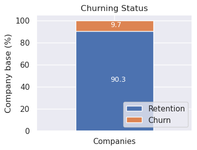
Histogram
A histogram is a graphical representation that shows the distribution of a numerical variable. It divides the range of the variable into intervals (called bins) and displays the number of observations (frequency) that fall into each bin as bars
from matplotlib.ticker import MaxNLocator
def df_histogram(df, column: str, hue:Optional[str]=None ,title: str = "",
nbins:int=20,
xlabel: str = "", ylabel: str = "Frequency",
ax: Optional[Axes] = None, n_xticks:int=5):
"""
Histogram plot from a DataFrame column.
-----------------------------------------
df: DataFrame containing the data to plot
column: Column name for the histogram
title: Title of the plot
nbins: Number of bins for the histogram
xlabel: Label for the x-axis
ylabel: Label for the y-axis
ax: Matplotlib axes object to draw on. If None, a new figure and axes are created.
n_xticks: Number of x-ticks to display on the x-axis
"""
# If ax is provided, use it; otherwise, create a new figure
new_fig = (ax is None)
if new_fig:
fig, ax = plt.subplots(figsize=(8, 6)) # figsize es relevante aquí
plt.sca(ax)
# Plot histogram
if df[column].dtype == pl.Date:
# Convert date to numpy.datetime64 for plotting
serie = df.select(pl.col(column)).to_numpy().astype('datetime64[D]').flatten()
hue = df[hue] if hue else None
sns.histplot(x = serie,
hue=hue,
multiple="stack",
bins=nbins,
kde=False,
ax=ax)
else:
sns.histplot(data=df,
x=column,
hue=hue,
multiple="stack",
bins=nbins,
kde=False,
ax=ax)
ax.xaxis.set_major_locator(MaxNLocator(nbins=n_xticks))
# Set labels and title
plt.title(title)
plt.xlabel(xlabel)
plt.ylabel(ylabel)
plt.tight_layout()
# Only if it has created a new figure
if new_fig:
plt.show()
fig, ((ax0, ax1), (ax2, ax3)) = plt.subplots(2, 2, figsize=(8, 6))
# Example usage of df_histogram with date column
df_histogram(client_df[0:110], column="date_end", title="End of Contract Dates", xlabel="End Date", ylabel="Frequency", ax=ax0)
# Example usage of df_histogram with hue
df_histogram(client_df[0:110], column="date_end", hue="churn" ,title="End of Contract Dates", xlabel="End Date", ylabel="Frequency", ax=ax1)
# Example usage of df_histogram with hue and reducing xticks
df_histogram(client_df[0:110], column="date_end", hue="churn" ,title="End of Contract Dates", xlabel="End Date", ylabel="Frequency", ax=ax2,
n_xticks=3)
# Example usage of df_histogram with numerical series
df_histogram(client_df, column="cons_12m", title="Last 12 months consumption", xlabel="Consumption", ylabel="Frequency",
nbins=8, n_xticks=5, hue="churn", ax=ax3)
plt.tight_layout()
# Helps with overlapping x-axis labels
fig.autofmt_xdate()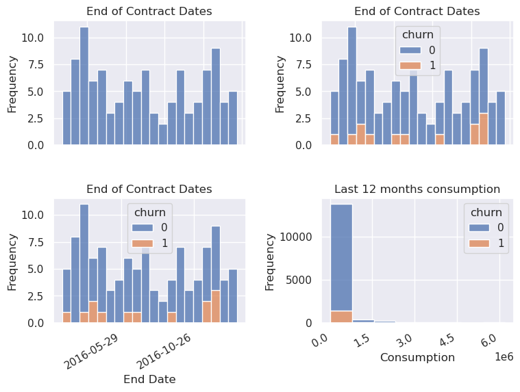
Time series
date_price = pl.col("price_date")
years_price = date_price.dt.year().alias("year") # extract year
months_price = date_price.dt.strftime("%b").alias("month") # extract month
i_months_price = date_price.dt.month().alias("imonth") # extract month
result = price_df.select([years_price, months_price, i_months_price]).sort("imonth")
print(result)shape: (193_002, 3)
┌──────┬───────┬────────┐
│ year ┆ month ┆ imonth │
│ --- ┆ --- ┆ --- │
│ i32 ┆ str ┆ i8 │
╞══════╪═══════╪════════╡
│ 2015 ┆ Jan ┆ 1 │
│ 2015 ┆ Jan ┆ 1 │
│ 2015 ┆ Jan ┆ 1 │
│ 2015 ┆ Jan ┆ 1 │
│ 2015 ┆ Jan ┆ 1 │
│ … ┆ … ┆ … │
│ 2015 ┆ Dec ┆ 12 │
│ 2015 ┆ Dec ┆ 12 │
│ 2015 ┆ Dec ┆ 12 │
│ 2015 ┆ Dec ┆ 12 │
│ 2015 ┆ Dec ┆ 12 │
└──────┴───────┴────────┘def plot_historical_prices(df, x_column:str="price_date"):
assert isinstance(df, pl.DataFrame)
# Changes from wide format to long format.
df_long = df.unpivot(
index=x_column,
variable_name="prices",
value_name="price_value"
)
sns.relplot(data=df_long,
x=x_column,
y="price_value",
hue="prices",
kind="line",
aspect=2,
marker="o",
)from matplotlib.dates import MonthLocator, DateFormatter
df_var = price_df[0:1000].select(pl.col(
"price_date",
"price_off_peak_var",
"price_mid_peak_var",
"price_peak_var"
))
df_fix = price_df[0:1000].select(pl.col(
"price_date",
"price_off_peak_fix",
"price_mid_peak_fix",
"price_peak_fix"
))
plot_historical_prices(df=df_var, x_column="price_date")
plot_historical_prices(df=df_fix, x_column="price_date")
# Get the current axes
ax = plt.gca()
# Set the major x-axis ticks to show the start of each month
ax.xaxis.set_major_locator(MonthLocator(interval=1))
# Set the format to display the full month name
ax.xaxis.set_major_formatter(DateFormatter('%b')) # Use '%b' for abbreviated names (e.g., Jan, Feb)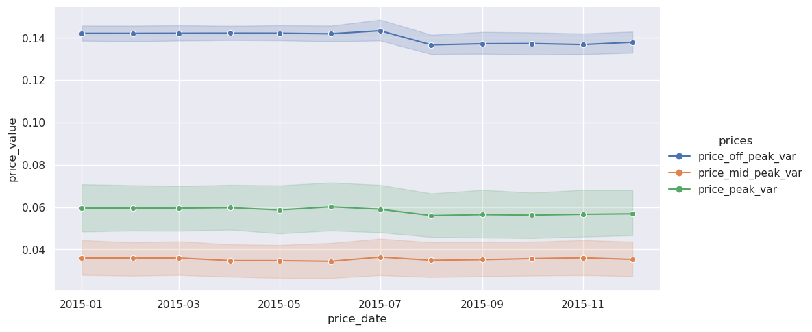
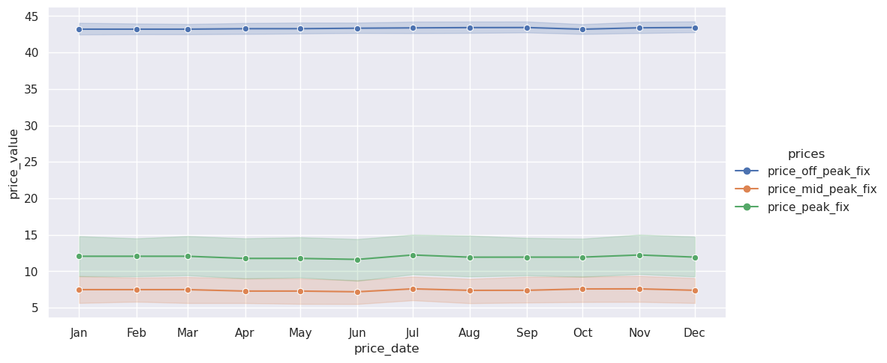
plotting_vars = pl.col("price_date", "price_off_peak_var", "price_mid_peak_var", "price_peak_var")
df_var = price_df.join(client_df.select(pl.col(["id", "churn"])), how="inner", on="id").select(plotting_vars, "churn")
df_var_churn = df_var.filter(pl.col("churn") == 1)
df_var_nochurn = df_var.filter(pl.col("churn") == 0)
print(price_df.shape)
print(df_var.shape)
print(df_var_churn.shape)(193002, 8)
(175149, 5)
(17003, 5)plot_historical_prices(df=df_var_churn.select(plotting_vars), x_column="price_date")
# Get the current axes
ax = plt.gca()
# Set the major x-axis ticks to show the start of each month
ax.xaxis.set_major_locator(MonthLocator(interval=1))
# Set the format to display the full month name
ax.xaxis.set_major_formatter(DateFormatter('%b')) # Use '%b' for abbreviated names (e.g., Jan, Feb)
plot_historical_prices(df=df_var_nochurn.select(plotting_vars), x_column="price_date")
# Get the current axes
ax = plt.gca()
# Set the major x-axis ticks to show the start of each month
ax.xaxis.set_major_locator(MonthLocator(interval=1))
# Set the format to display the full month name
ax.xaxis.set_major_formatter(DateFormatter('%b')) # Use '%b' for abbreviated names (e.g., Jan, Feb)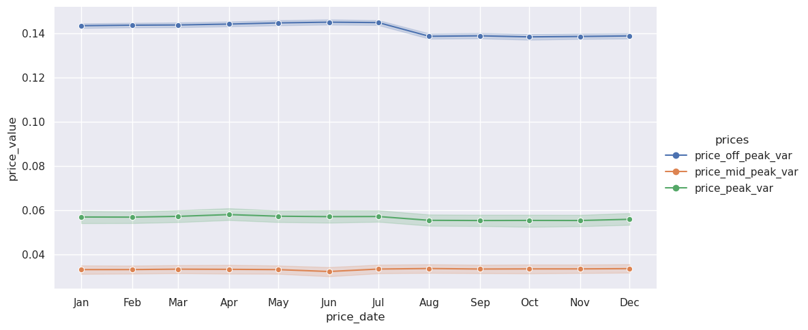
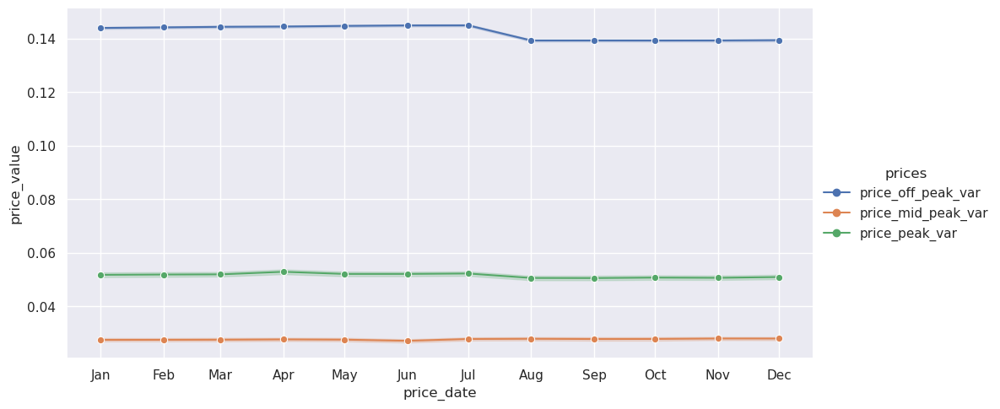
sns.relplot(data=df_var, x="price_date", y="price_off_peak_var", hue="churn", kind="line", marker="o")
ax = plt.gca()
ax.xaxis.set_major_locator(MonthLocator(interval=1))
ax.xaxis.set_major_formatter(DateFormatter('%b')) # Use '%b' for abbreviated names (e.g., Jan, Feb)
sns.relplot(data=df_var, x="price_date", y="price_mid_peak_var", hue="churn", kind="line", marker="o")
ax = plt.gca()
ax.xaxis.set_major_locator(MonthLocator(interval=1))
ax.xaxis.set_major_formatter(DateFormatter('%b')) # Use '%b' for abbreviated names (e.g., Jan, Feb)
sns.relplot(data=df_var, x="price_date", y="price_peak_var", hue="churn", kind="line", marker="o")
ax = plt.gca()
ax.xaxis.set_major_locator(MonthLocator(interval=1))
ax.xaxis.set_major_formatter(DateFormatter('%b')) # Use '%b' for abbreviated names (e.g., Jan, Feb)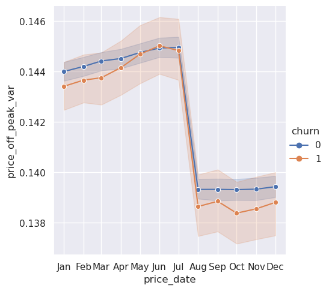
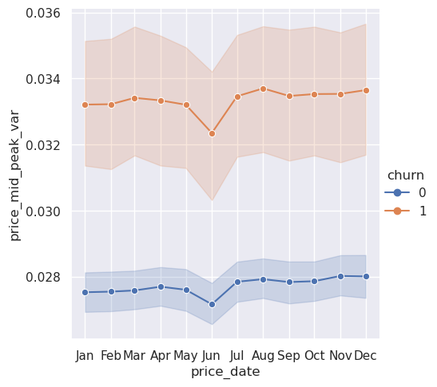
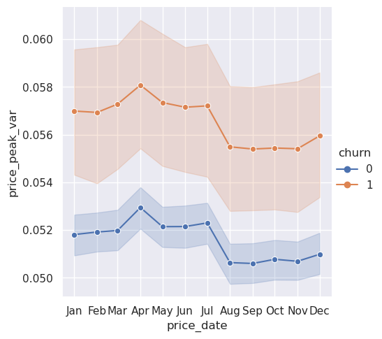
Clients that churned had higher variable prices peak and mid-peak than those that did not churned along the year.
var_or_fix = "fix" # or "fix"
plotting_vars = pl.col("price_date", f"price_off_peak_{var_or_fix}", f"price_mid_peak_{var_or_fix}", f"price_peak_{var_or_fix}")
df_fix = price_df.join(client_df.select(pl.col(["id", "churn"])), how="inner", on="id").select(plotting_vars, "churn")
df_fix_churn = df_fix.filter(pl.col("churn") == 1)
df_fix_nochurn = df_fix.filter(pl.col("churn") == 0)
print(price_df.shape)
print(df_fix.shape)
print(df_fix_churn.shape)(193002, 8)
(175149, 5)
(17003, 5)df_fix.columns['price_date',
'price_off_peak_fix',
'price_mid_peak_fix',
'price_peak_fix',
'churn']sns.relplot(data=df_fix, x="price_date", y=f"price_off_peak_{var_or_fix}", hue="churn", kind="scatter", marker="o")
ax = plt.gca()
ax.xaxis.set_major_locator(MonthLocator(interval=1))
ax.xaxis.set_major_formatter(DateFormatter('%b')) # Use '%b' for abbreviated names (e.g., Jan, Feb)
sns.relplot(data=df_fix, x="price_date", y=f"price_mid_peak_{var_or_fix}", hue="churn", kind="scatter", marker="o")
ax = plt.gca()
ax.xaxis.set_major_locator(MonthLocator(interval=1))
ax.xaxis.set_major_formatter(DateFormatter('%b')) # Use '%b' for abbreviated names (e.g., Jan, Feb)
sns.relplot(data=df_fix, x="price_date", y=f"price_peak_{var_or_fix}", hue="churn", kind="line", marker="o")
ax = plt.gca()
ax.xaxis.set_major_locator(MonthLocator(interval=1))
ax.xaxis.set_major_formatter(DateFormatter('%b')) # Use '%b' for abbreviated names (e.g., Jan, Feb)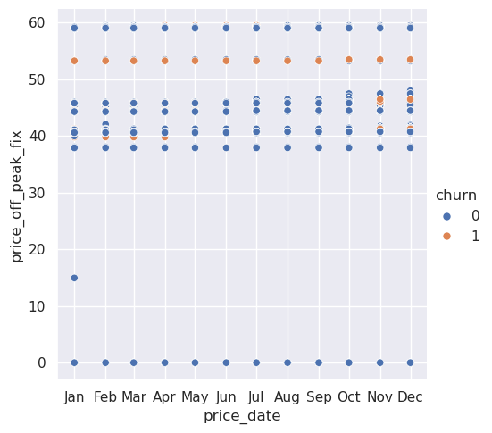
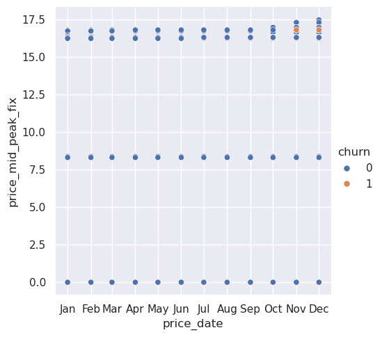
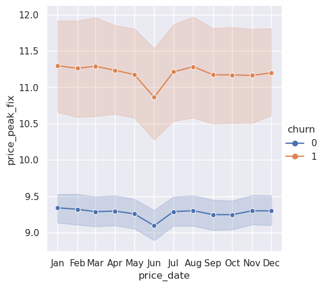
For the Fixed prices, those clients that churned had a larger price than those that did not churned.
Prices for the channels that does not have churning
# Unique values of the channel sales
ch_ids = client_df["channel_sales"].unique().to_list()
# display(ch_ids)
# Step 2: Create mapping
mapping = {val: idx for idx, val in enumerate(ch_ids)}
# display(mapping)
# Step 3: Replace the values. replace will save int as the old type (str), then, use replace_strict
client_df = client_df.with_columns(
pl.col("channel_sales").replace_strict(mapping).alias("ch_id")
)
# client_df["ch_id"]var_or_fix = "fix" # or "fix"
plotting_vars = pl.col("price_date", f"price_off_peak_{var_or_fix}", f"price_mid_peak_{var_or_fix}", f"price_peak_{var_or_fix}")
df_fix = price_df.join(client_df.select(pl.col(["id", "churn", "ch_id"])),
how="inner",
on="id").select(plotting_vars, "churn", "ch_id", "id")
display(price_df.shape)
display(df_fix.shape)(193002, 8)(175149, 7)# client_df.filter(~pl.col("id").is_in(price_df["id"].implode()))
price_df.filter(~pl.col("id").is_in(client_df["id"].implode())).head(2)
id0 = (price_df.filter(~pl.col("id").is_in(client_df["id"].implode())).select(pl.col("id"))[0,0])
print(id0)36b6352b4656216bfdb96f01e9a94b4edf_fix.filter(pl.col("id")==id0)
shape: (0, 7)
| price_date | price_off_peak_fix | price_mid_peak_fix | price_peak_fix | churn | ch_id | id |
|---|---|---|---|---|---|---|
| date | f64 | f64 | f64 | i64 | i64 | str |
df_fix
shape: (175_149, 7)
| price_date | price_off_peak_fix | price_mid_peak_fix | price_peak_fix | churn | ch_id | id |
|---|---|---|---|---|---|---|
| date | f64 | f64 | f64 | i64 | i64 | str |
| 2015-01-01 | 44.266931 | 0.0 | 0.0 | 0 | 4 | "038af19179925da21a25619c5a24b7… |
| 2015-02-01 | 44.266931 | 0.0 | 0.0 | 0 | 4 | "038af19179925da21a25619c5a24b7… |
| 2015-03-01 | 44.266931 | 0.0 | 0.0 | 0 | 4 | "038af19179925da21a25619c5a24b7… |
| 2015-04-01 | 44.266931 | 0.0 | 0.0 | 0 | 4 | "038af19179925da21a25619c5a24b7… |
| 2015-05-01 | 44.266931 | 0.0 | 0.0 | 0 | 4 | "038af19179925da21a25619c5a24b7… |
| … | … | … | … | … | … | … |
| 2015-08-01 | 40.728885 | 16.291555 | 24.43733 | 0 | 4 | "16f51cdc2baa19af0b940ee1b3dd17… |
| 2015-09-01 | 40.728885 | 16.291555 | 24.43733 | 0 | 4 | "16f51cdc2baa19af0b940ee1b3dd17… |
| 2015-10-01 | 40.728885 | 16.291555 | 24.43733 | 0 | 4 | "16f51cdc2baa19af0b940ee1b3dd17… |
| 2015-11-01 | 40.728885 | 16.291555 | 24.43733 | 0 | 4 | "16f51cdc2baa19af0b940ee1b3dd17… |
| 2015-12-01 | 40.728885 | 16.291555 | 24.43733 | 0 | 4 | "16f51cdc2baa19af0b940ee1b3dd17… |
# sns.relplot(data=df_fix, x="price_date", y="price_peak_fix", hue="ch_id", kind="line", marker="o",
# palette="hsv")
# ax = plt.gca()
# ax.xaxis.set_major_locator(MonthLocator(interval=1))
# ax.xaxis.set_major_formatter(DateFormatter('%b')) # Use '%b' for abbreviated names (e.g., Jan, Feb)a = client_df.select(
pl.col("ch_id"),
pl.col("churn")
).group_by("ch_id").agg(pl.col("churn").sum()>1).sort("ch_id")
display(a)
shape: (8, 2)
| ch_id | churn |
|---|---|
| i64 | bool |
| 0 | true |
| 1 | true |
| 2 | true |
| 3 | false |
| 4 | true |
| 5 | true |
| 6 | false |
| 7 | false |
pc = client_df.join(price_df.select(pl.col(["id"])),
how="inner",
on="id").select("id")
display(client_df.shape)
display(price_df.shape)
display(pc["id"].n_unique())(14606, 27)(193002, 8)14606Extra analysis on prices:
Let’s see from the price dataset, how many have a 0 price, and maybe make a difference between those that probably beacause of a special offer they have a price of 0
df_prices = price_df.join(client_df.select(pl.col(["id", "churn"])), how="inner", on="id")Calculate the averages for each ID, (avg price per year)
df_avg = df_prices.group_by("id", maintain_order=True).agg(
pl.all().mean().name.prefix("avg_")
).select(
# pl.exclude("avg_price_date")
pl.col("id"),
pl.col("avg_churn").alias("churn"),
avg_var_price = pl.col("avg_price_off_peak_var") + pl.col("avg_price_peak_var") + pl.col("avg_price_mid_peak_var"),
avg_fix_price = pl.col("avg_price_off_peak_fix") + pl.col("avg_price_peak_fix") + pl.col("avg_price_mid_peak_fix"),
avg_var_peak = pl.col("avg_price_peak_var"),
avg_var_mid = pl.col("avg_price_mid_peak_var"),
avg_var_off = pl.col("avg_price_off_peak_var"),
avg_fix_peak = pl.col("avg_price_peak_fix"),
avg_fix_mid = pl.col("avg_price_mid_peak_fix"),
avg_fix_off = pl.col("avg_price_off_peak_fix"),
)
display(df_avg.head(3))
shape: (3, 10)
| id | churn | avg_var_price | avg_fix_price | avg_var_peak | avg_var_mid | avg_var_off | avg_fix_peak | avg_fix_mid | avg_fix_off |
|---|---|---|---|---|---|---|---|---|---|
| str | f64 | f64 | f64 | f64 | f64 | f64 | f64 | f64 | f64 |
| "038af19179925da21a25619c5a24b7… | 0.0 | 0.14855 | 44.35582 | 0.0 | 0.0 | 0.14855 | 0.0 | 0.0 | 44.35582 |
| "31f2ce549924679a3cbb2d128ae9ea… | 0.0 | 0.299189 | 81.322007 | 0.102637 | 0.073525 | 0.123027 | 24.396601 | 16.264402 | 40.661003 |
| "48f3e6e86f7a8656b2c6b6ce276305… | 0.0 | 0.145552 | 44.400265 | 0.0 | 0.0 | 0.145552 | 0.0 | 0.0 | 44.400265 |
Clients whose average variable price is 0
df_avg.filter(
pl.col("avg_var_price")==0.0
).select(
pl.col("id").count().alias("total_clients"),
pl.col("churn").sum().alias("n_churn_clients"),
pl.col("avg_var_price").mean(),
pl.col("avg_fix_price").mean(),
pl.col("avg_var_peak").mean(),
pl.col("avg_var_mid").mean(),
pl.col("avg_var_off").mean(),
)
shape: (1, 7)
| total_clients | n_churn_clients | avg_var_price | avg_fix_price | avg_var_peak | avg_var_mid | avg_var_off |
|---|---|---|---|---|---|---|
| u32 | f64 | f64 | f64 | f64 | f64 | f64 |
| 20 | 0.0 | 0.0 | 0.0 | 0.0 | 0.0 | 0.0 |
Clients whose average fix price is 0
df_avg.filter(
pl.col("avg_fix_price")==0.0
).select(
pl.col("id").count().alias("total_clients"),
pl.col("churn").sum().alias("n_churn_clients"),
pl.col("avg_var_price").mean(),
pl.col("avg_fix_price").mean(),
pl.col("avg_var_peak").mean(),
pl.col("avg_var_mid").mean(),
pl.col("avg_var_off").mean(),
pl.col("avg_fix_peak").mean(),
pl.col("avg_fix_mid").mean(),
pl.col("avg_fix_off").mean(),
)
shape: (1, 10)
| total_clients | n_churn_clients | avg_var_price | avg_fix_price | avg_var_peak | avg_var_mid | avg_var_off | avg_fix_peak | avg_fix_mid | avg_fix_off |
|---|---|---|---|---|---|---|---|---|---|
| u32 | f64 | f64 | f64 | f64 | f64 | f64 | f64 | f64 | f64 |
| 105 | 0.0 | 0.002811 | 0.0 | 0.0 | 0.0 | 0.002811 | 0.0 | 0.0 | 0.0 |
Let’s plot the prices once the average prices equal to 0 have been filtered
df_filtered = df_avg.filter(
# (pl.col("avg_var_price")>0.0) & (pl.col("avg_fix_price")>0.0)
(pl.col("avg_var_peak")>0.0) & (pl.col("avg_var_mid")>0.0) & (pl.col("avg_var_off")>0.0)
).select(
pl.col("avg_var_price"),
pl.col("avg_fix_price"),
pl.col("churn"),
pl.col("avg_var_peak"),
pl.col("avg_var_mid"),
pl.col("avg_var_off"),
pl.col("avg_fix_peak"),
pl.col("avg_fix_mid"),
pl.col("avg_fix_off"),
x=1
)
display(df_filtered)
shape: (5_659, 10)
| avg_var_price | avg_fix_price | churn | avg_var_peak | avg_var_mid | avg_var_off | avg_fix_peak | avg_fix_mid | avg_fix_off | x |
|---|---|---|---|---|---|---|---|---|---|
| f64 | f64 | f64 | f64 | f64 | f64 | f64 | f64 | f64 | i32 |
| 0.299189 | 81.322007 | 0.0 | 0.102637 | 0.073525 | 0.123027 | 24.396601 | 16.264402 | 40.661003 | 1 |
| 0.298645 | 81.294854 | 1.0 | 0.10248 | 0.07322 | 0.122945 | 24.388455 | 16.258971 | 40.647427 | 1 |
| 0.3032895 | 81.294854 | 0.0 | 0.104028 | 0.074768 | 0.124493 | 24.388455 | 16.258971 | 40.647427 | 1 |
| 0.302519 | 81.322007 | 0.0 | 0.103748 | 0.074635 | 0.124137 | 24.396601 | 16.264402 | 40.661003 | 1 |
| 0.3031655 | 81.45777 | 1.0 | 0.103993 | 0.074669 | 0.124503 | 24.43733 | 16.291555 | 40.728885 | 1 |
| … | … | … | … | … | … | … | … | … | … |
| 0.301292 | 81.403465 | 0.0 | 0.103794 | 0.07316 | 0.124338 | 24.421038 | 16.280694 | 40.701732 | 1 |
| 0.292682 | 78.249923 | 0.0 | 0.100903 | 0.067322 | 0.124457 | 22.368303 | 14.912203 | 40.969417 | 1 |
| 0.289196 | 81.376312 | 0.0 | 0.099811 | 0.069038 | 0.120347 | 24.412893 | 16.275263 | 40.688156 | 1 |
| 0.302693 | 81.45777 | 0.0 | 0.10424 | 0.073947 | 0.124506 | 24.43733 | 16.291555 | 40.728885 | 1 |
| 0.30589 | 81.294854 | 0.0 | 0.104895 | 0.075635 | 0.12536 | 24.388455 | 16.258971 | 40.647428 | 1 |
fig, axs = plt.subplots(3,1, figsize=(8, 6))
sns.boxplot(df_filtered, x="avg_var_peak", hue="churn", ax=axs[0])
sns.boxplot(df_filtered, x="avg_var_mid", hue="churn", ax=axs[1])
sns.boxplot(df_filtered, x="avg_var_off", hue="churn", ax=axs[2])
plt.show()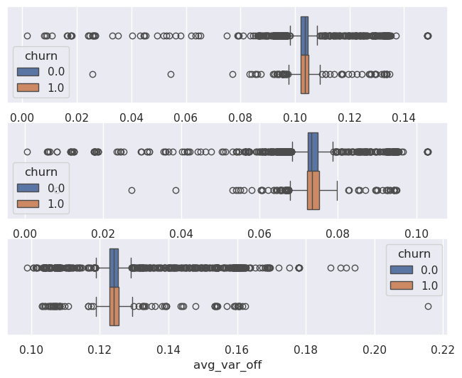
fig, axs = plt.subplots(3,1, figsize=(8, 6))
sns.boxplot(df_filtered, x="avg_fix_peak", hue="churn", ax=axs[0])
sns.boxplot(df_filtered, x="avg_fix_mid", hue="churn", ax=axs[1])
sns.boxplot(df_filtered, x="avg_fix_off", hue="churn", ax=axs[2])
plt.show()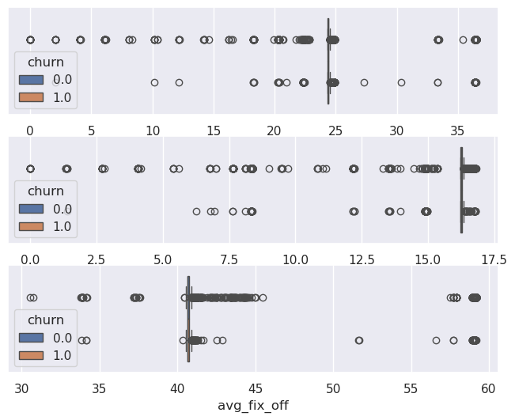
sns.relplot(x=pl.concat([df_filtered["x"], 1+df_filtered["x"]]),
y=pl.concat([df_filtered["avg_var_price"], df_filtered["avg_var_price"]]),
hue=pl.concat([df_filtered["churn"], df_filtered["churn"]]),
kind="line")
plt.show()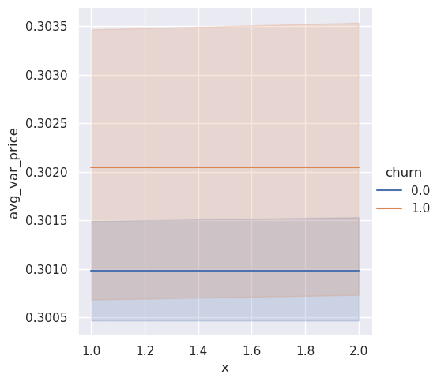
pl.concat([df_filtered["x"], df_filtered["x"]])
shape: (11_318,)
| x |
|---|
| i32 |
| 1 |
| 1 |
| 1 |
| 1 |
| 1 |
| … |
| 1 |
| 1 |
| 1 |
| 1 |
| 1 |
df_histogram(df=df_filtered, column="avg_var_price", hue="churn", nbins=50)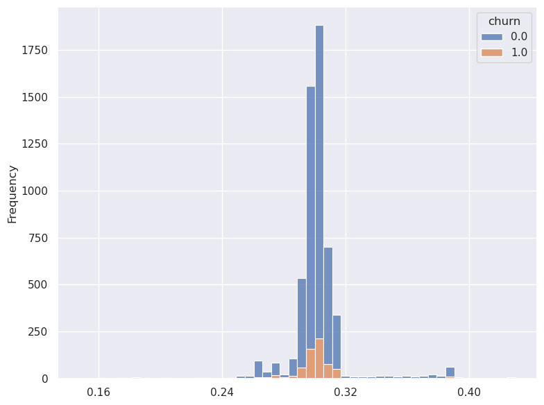